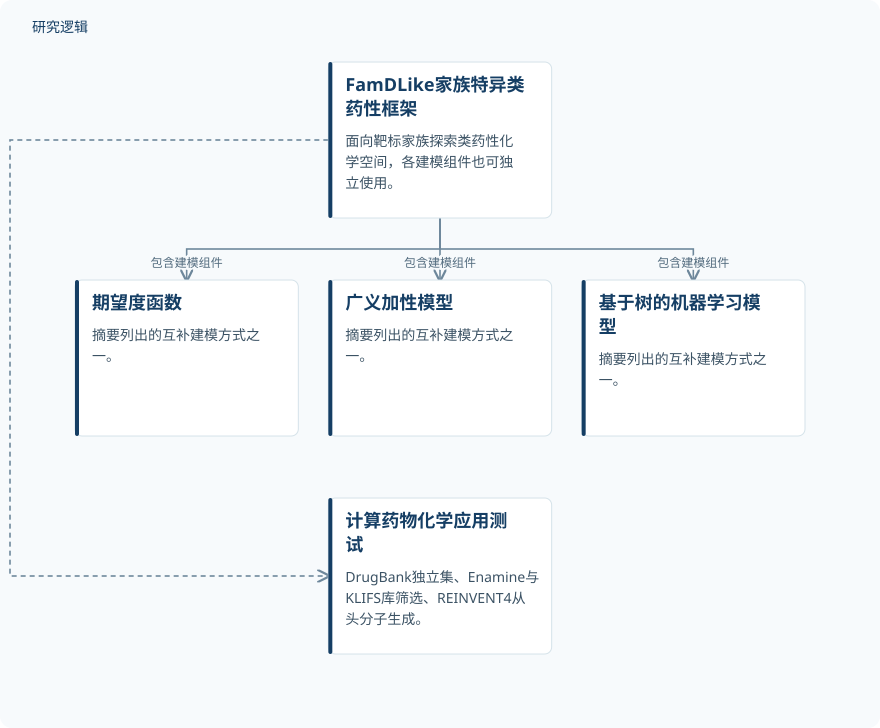

摘要解读
超越全局类药性：面向靶标家族的FamDLike类药性评分框架
Beyond global drug-likeness: The FamDLike framework as a target family-specific drug-likeness score.
解读更新 2026-11-10 15:56 · 依据公开摘要整理，未核验全文细节
同一把“类药性标尺”，是否适合不同靶标家族？FamDLike将靶标家族差异纳入评分，为理解虚拟筛选和分子生成中的评价偏向提供了一个具体切口。
文章目录
全局类药性评分可能偏向某些靶标
类药性评分用于评价小分子的理化特征，既可作为虚拟筛选的过滤条件，也可作为生成式设计的奖励函数。摘要指出，QED等通用评分虽被广泛采用，但不同治疗靶标家族的配体并不占据相同的理化性质空间。
因此，统一标准可能系统性地奖励某些靶标类别、惩罚另一些类别，缩窄被视为“具有类药性”的化学空间。本文关注的不是取消类药性评价，而是让评价标准更贴近具体项目对应的靶标家族。
FamDLike兼顾可解释性与预测灵活性
作者提出面向靶标家族的FamDLike框架，结合期望度函数、广义加性模型和基于树的机器学习模型。这些建模方式覆盖可解释性与灵活性之间的不同取向；各组件也可独立使用，取决于使用者更重视哪一方面。
摘要列出的应用测试包括DrugBank独立数据集、Enamine与KLIFS化合物库筛选，以及通过REINVENT4进行的从头分子生成。这些场景涉及独立数据评价、候选分子筛选和生成式化学，但摘要未展开各场景的具体实施过程。
依据摘要整理的FamDLike框架与应用示意


概括框架包含的建模组件及摘要列出的测试场景，不表示组件必须串行运行，也不表达定量性能。
下载 SVG图示关系说明
实线表示相邻阶段的信息流，虚线表示跨阶段联系或反馈。
FamDLike家族特异类药性框架 → 期望度函数：包含建模组件；FamDLike家族特异类药性框架 → 广义加性模型：包含建模组件；FamDLike家族特异类药性框架 → 基于树的机器学习模型：包含建模组件；FamDLike家族特异类药性框架 → 计算药物化学应用测试：在所列场景中测试
作者报告的是家族感知的补充性评分
摘要将FamDLike概括为对现有类药性评分的一种补充，强调其更强的区分能力、可解释性和靶标感知特征，并提出可用于早期发现流程中的排序及生成式化学的奖励函数。这里的结论属于作者报告的定性总结，摘要没有给出性能提升幅度。
作者还提供了用于获取分子类药性概况的网页入口。需要区分的是，评分工具与应用测试的报告，并不等同于候选分子的药效、安全性或临床价值已经得到验证。
摘要尚不足以判断优势的适用边界
仅凭当前摘要，无法判断所覆盖靶标家族、样本规模与分布、训练和测试划分，以及DrugBank独立集的具体构成。摘要也未展开与QED等指标的比较设置、评价指标和统计不确定性，因此不能据此判断优势在不同家族中是否一致。
对于分子生成，摘要未说明奖励函数配置、生成结果的评价细节或后续验证范围。这些是当前材料无法回答的问题，不应写成论文没有开展相关工作，也不能把预期用途直接当成已经验证的效果。
阅读启发：先审视生成设计的奖励标准
阅读启发：对生成式设计而言，值得关注的不只是生成模型本身，还包括奖励标准是否适合目标任务。进一步阅读本文时，可重点查看家族特异评分如何定义、不同模型的解释性如何呈现，以及生成结果相对全局评分发生了哪些变化；这些问题的答案仍需正文证据支持。
以上为本站阅读启发与建议，不是论文已验证的结论。